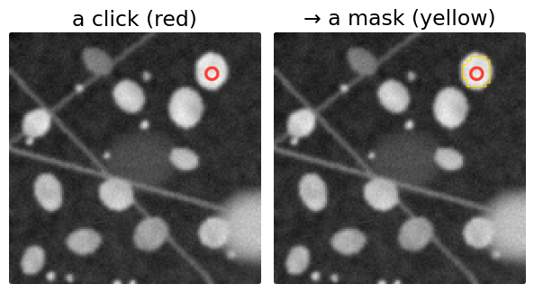
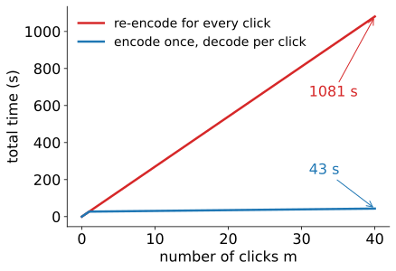
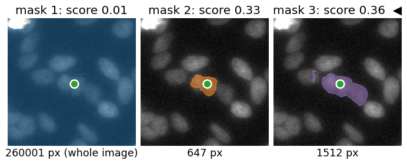
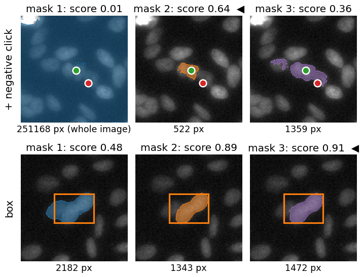
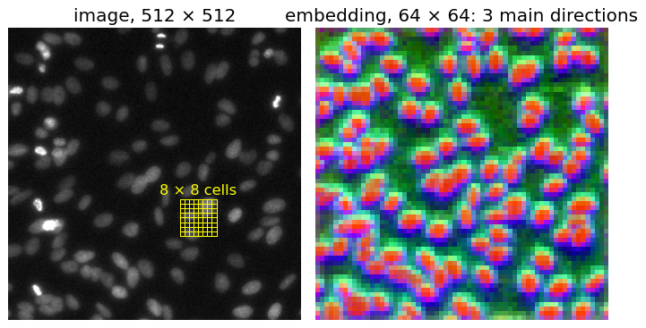
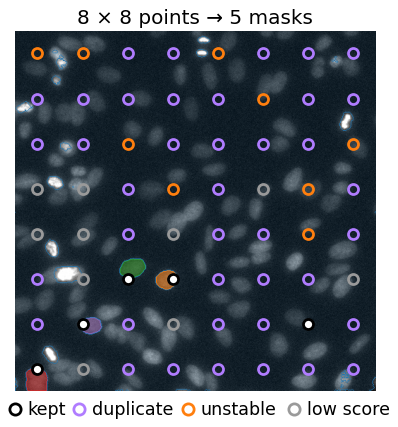
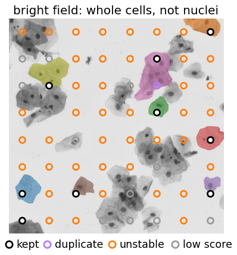

StarDist, Cellpose and YOLO answer a fixed question: “where are the nuclei (or the objects of these classes)?”. A promptable segmenter answers a different one: “what is the object at this click?”. The family is called SAM (“segment anything”; Kirillov et al., 2023; second version with memory, Ravi et al., 2024).
Three parts: a heavy image encoder run once per image, a light prompt encoder and mask decoder run per click.
One click is ambiguous: three candidate masks, each with a predicted IoU.
More prompts (a negative click, a box) remove the ambiguity.
Automatic masks: a grid of clicks, then filters (score, stability, overlap).
What it does not know: “a nucleus” is not one of its concepts.
Slides titled The math give the formulas and proofs; the ideas are complete without them.
From the modern deep learning day: compare every pixel’s embedding with the clicked pixel’s, keep what is similar, keep the connected piece that contains the click.
Today, the real network, and three questions:
Why does a click take half a second when the image took half a minute?
What should one click on a nucleus mean: the nucleus, a part of it, or its whole cluster?
What happens when nobody clicks: “segment everything”?

Three parts: heavy once, light per click
Image encoder: a transformer on 16 × 16-pixel patches of the image resized to 1024 × 1024; pretrained, then trained on millions of masks. Output: an embedding of 64 × 64 positions × 256 numbers. Run once per image.
Prompt encoder: clicks (labelled object or background), a box, or an earlier mask → a few tokens.
Mask decoder: prompt tokens and the embedding attend to each other → masks. Run per prompt.
re-encode for every click: 40 \times 27.0 = 1081 s.
The expensive part depends only on the image; the cheap part depends on the prompt. Same idea as computing the random-forest feature stack once and only re-running the classifier when you paint.

The math: cost of m prompts
The encoder is a transformer on N = 64^2 = 4096 tokens: each self-attention layer builds an N \times N matrix, cost \propto N^2 (attention unit). Done once.
The decoder attends from k prompt tokens (a handful) to the N image positions: cost \propto kN. Done per prompt.
a speed-up \dfrac{m(T_\text{enc} + T_\text{dec})}{T_\text{enc} + mT_\text{dec}} \to \dfrac{T_\text{enc} + T_\text{dec}}{T_\text{dec}} \approx 64 for many prompts.
Prompt points enter as tokens: the coordinates are passed through sines and cosines of several frequencies (a positional encoding, as for the image patches), plus a learned vector for “object” or “background”.
One click is ambiguous
A click inside a clump of nuclei. Did you mean this nucleus? A part of it? The clump?
The decoder does not guess one: it returns three candidate masks (roughly small, medium, large) and, for each, a predicted IoU: the network’s own estimate of how good that mask is.
Here the scores are low (0.33, 0.36): the network itself says “unsure”. Mask 1 is the whole background.

Which mask do you want?
The predicted IoU picks one by default (the highest), but the right choice depends on the question:
Question
Mask
count nuclei
the single nucleus
area of the clump
the large one
texture inside a nucleus
possibly the small one
The scores are the network’s own estimate. They are often right, but they are not an IoU with any truth: check them on annotated images (evaluation day).
When all three scores are low, the click is in a hard place. Add a prompt.
The math: training with ambiguity
Training pairs: an image, a prompt, one true mask M (an annotator meant something). Three outputs \hat M_1, \hat M_2, \hat M_3.
\mathcal L = \min_{j} \ \ell(\hat M_j, M) \;+\; \sum_j \big(\widehat{\text{IoU}}_j - \text{IoU}(\hat M_j, M)\big)^2 .
Only the best output is pushed towards M. If the same click sometimes means the nucleus and sometimes the clump, one output learns each: the outputs specialise by size.
An average loss \tfrac13\sum_j \ell(\hat M_j, M) would push all three towards the average answer: a blurred in-between mask.
The second term trains the IoU head to predict each output’s true IoU with M: that is the score.
More prompts remove ambiguity
Negative click on the neighbour: “not this”. The chosen mask becomes the clicked nucleus (score 0.64).
Box: the object fills the box. Scores 0.89 and 0.91 for the whole object.
Feed back the chosen mask as a prompt, then click again to correct it: how annotation tools use it.
A negative click on empty background does almost nothing here: it removes no part of the clump.

Try it: the real network
The embedding as a picture
256 numbers per position: show the three main directions (principal components, recall the PCA unit) as red, green, blue.
Nuclei and background separate clearly: the encoder already “sees” objects.
One position covers 16 × 16 pixels of the 1024² input: 8 × 8 pixels of this 512² image.
Objects much smaller than one cell of this grid are below the embedding’s resolution; the decoder sharpens borders, but cannot invent an object the embedding blurred away.

The math: from logits to a mask
The decoder outputs, per candidate, a logit map \ell on a 256 \times 256 grid over the resized image (4 input pixels per cell; 2 pixels of a 512^2 image).
Restore: bilinear interpolation of \ell to the image size (images unit), then threshold at 0: M = \{p : \ell(p) > 0\}.
Resolution: features come from the 64 \times 64 embedding (one position per 16 input pixels) plus higher-resolution features of the encoder’s early layers; borders are sharper than 16 pixels, but objects of a few pixels have no position of their own.
For an image of width W resized to 1024: one embedding position covers W/64 original pixels (8 for W = 512, 10.9 for W = 696, 16 for W = 1024).
Automatic masks: “segment everything”
No prompts: click everywhere.
A grid of single clicks (8 × 8 = 64 points → 192 candidates).
Drop low predicted IoU (here: ≤ 0.8).
Drop unstable masks (next slide).
Drop duplicates: box overlap, keep the higher score (NMS, detection unit).
Nuclei image: 192 → 5 masks; one is the whole background. Pixels no mask covers stay unlabelled. Decoder time grows with the grid: 21 s (8 × 8), 84 s (16 × 16), 338 s (32 × 32).

Stability: does the mask keep its shape?
Threshold the same logit map at +1 and at -1 instead of 0:
It is 1 exactly when no pixel has -\delta < \ell \le \delta: the logit jumps across the whole band at the border. With a logit slope s per pixel at the border of a round mask of radius r, the band is 2\delta/s pixels wide and stability \approx 1 - 4\delta/(s\,r): small objects need steeper borders to pass the same filter.
Try it: a toy you can open up
What it does not know
“A nucleus” is not a concept it was trained on; it was trained on masks of anything, mostly in photographs.
Automatic masks contain background regions, clumps and parts; a click gives a mask, not a definition that is the same over 1000 images.
Domain shift: bright field, right: it finds whole cells (the most “object-like” things), not the nuclei that were annotated: 0 of 98.
Small objects: below the embedding’s resolution, and rarely hit by a coarse grid.
Microscopy-tuned versions exist for this reason, and the newest Cellpose uses this encoder with its own flow decoder (the Cellpose unit).

Video and z-stacks: a memory
The second version adds a memory: the embeddings and masks of earlier frames (or slices) are stored, and the decoder of the next frame attends to them too.
One click in frame 1 → the object is followed through the stack.
Fails when the object leaves and comes back, when two similar objects cross, or when a cell divides (which child is “the object”?).
Prompts from another method: boxes from a detector (YOLO unit) → one mask per box: detection becomes instance segmentation.
Human in the loop: click, correct with negative clicks, accept; a fast way to make training annotations for StarDist or Cellpose.
Classical counterpart: the seeds of graph-cut segmentation (graph-cut day) are prompts too; there the “decoder” is a minimum cut on an intensity model of this image only.